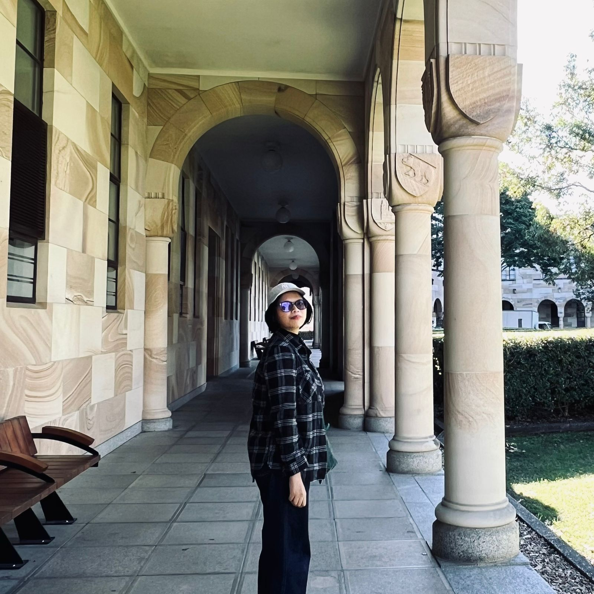

Adine's Website

POV: When a designer tries to code
G'day mate! I'm Adine and I'm a Master of Interaction Design student at The University of Queensland.
Hailing from Jakarta, Indonesia to the sunny Brisbane, Queensland.
Previously, I work as a Product Designer. This website is for DECO7130 - Intro to Web Design.
Hopefully I can do well in this course.
Maybe I'll become a front-end dev, who knows?
This is italic
This is underline
Combine all of them
Adine's Instagram